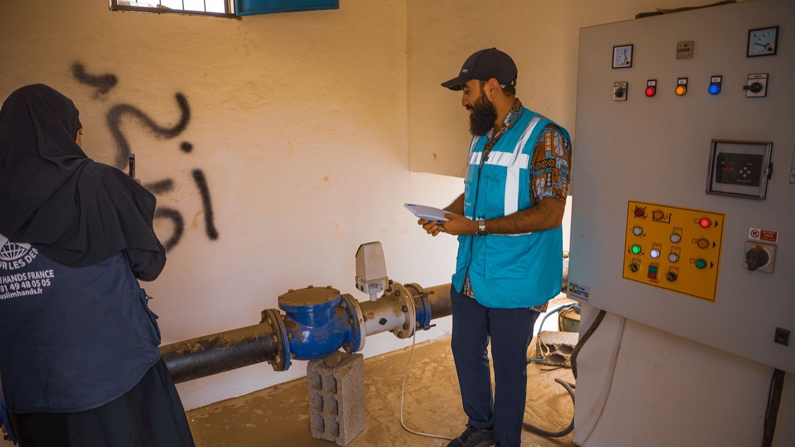
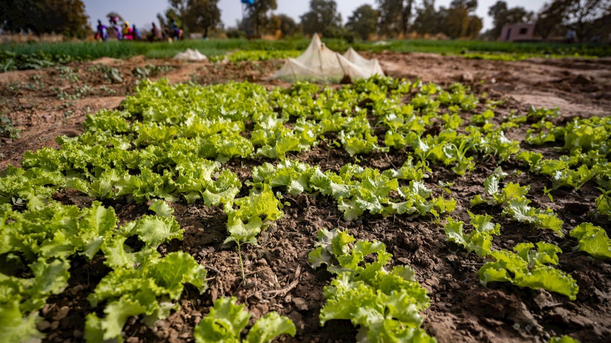

- Capital jamais dépensé, placé selon la finance islamique
- Rapport annuel du waqf : revenus et ouvrages financés
- Reçu fiscal immédiat : 100 € vous coûtent 34 €
Comment fonctionne le waqf de Muslim Hands ?
Quatre étapes, et un rapport chaque année. Votre part travaille pendant que vous dormez, et longtemps après.
Vous prenez une part
100 € ou plus, en une fois ou chaque mois, à votre nom ou au nom d'un proche, vivant ou défunt. Un certificat vous est envoyé.
Le capital est placé
Dans un fonds conforme aux principes de la finance islamique, sans intérêt ni secteur illicite, audité chaque année. Il n'est jamais dépensé.
Les revenus agissent
Entretien et réparation des puits, bourses scolaires, médicaments des cliniques : des dépenses que les dons ponctuels couvrent mal.
Pour toujours
Chaque année, vous recevez le rapport du waqf : capital, revenus, ouvrages financés. Vos héritiers le recevront après vous.
Le waqf, de la Médine du Prophète aux fondations d'aujourd'hui
Le premier waqf de l'islam est un puits. À Médine, le Prophète encouragea Othman à acheter le puits de Rouma et à en offrir l'eau à tous, pour toujours. Omar fit de même avec ses terres de Khaybar : « Ne les vends pas, ne les donne pas, ne les lègue pas ; que leurs fruits aillent aux pauvres. »
Pendant des siècles, le waqf (on écrit aussi wakf, ou habous au Maghreb) a financé les hôpitaux, les écoles, les fontaines et les caravansérails du monde musulman. Istanbul, Le Caire ou Fès tiennent encore debout grâce à lui. La fondation d'aujourd'hui, le fonds de dotation, repose sur le même principe : un capital protégé, des revenus affectés, une cause qui ne s'éteint pas.

Qu'est-ce qu'un waqf ?
Le mot vient de l'arabe waqafa, « arrêter, immobiliser ». Un waqf est une donation perpétuelle : le bien ou le capital donné ne peut plus être vendu, donné ni hérité. Il est « arrêté » au service d'une cause, et seuls ses revenus sont dépensés. Le donateur, le waqif, choisit la cause ; le gestionnaire, le nazir, veille au capital et distribue les revenus ; les bénéficiaires changent au fil des générations. Le waqf est ainsi la forme la plus durable de la sadaqa jariya, l'aumône continue dont le défunt continue de bénéficier.

Ma part de waqf
100 € vous coûtent 34 € après réduction d'impôt de 66 %.
Prendre une part de waqfCapital jamais dépensé · certificat au nom de votre choix · rapport annuel du waqf
Un waqf est-il possible en France ?
Le droit français ne connaît pas le waqf en tant que tel, mais il offre des outils qui en respectent l'esprit : l'association peut détenir un fonds dont elle ne dépense que les revenus, et le fonds de dotation est précisément conçu pour conserver un capital et n'en affecter que les produits. Muslim Hands France gère son waqf au sein d'un fonds dédié, séparé des autres dons, placé selon les principes de la finance islamique, sans intérêt ni secteur illicite, et audité chaque année par un commissaire aux comptes. Voir nos comptes et nos rapports.

Waqf, sadaqa jariya, zakat : quelle différence ?
| Zakat al maal | Sadaqa jariya | Waqf | |
|---|---|---|---|
| Caractère | Obligatoire, 2,5 % | Volontaire | Volontaire |
| Durée du bienfait | Immédiate | Tant que l'ouvrage fonctionne | Perpétuelle |
| Le capital | Distribué aux ayants droit | Investi dans un ouvrage | Conservé, revenus seuls dépensés |
| Exemple | Colis alimentaire, parrainage | Puits, arbre, machine à coudre | Fonds d'entretien des puits |
| Montant | Selon le calculateur | Dès 15 € | 100 € la part |
Les trois se complètent. La zakat al maal répond à l'urgence : nourrir, soigner, scolariser cette année. La sadaqa jariya construit l'ouvrage. Le waqf garantit que l'ouvrage sera encore debout dans vingt ans : un puits non entretenu cesse de fonctionner en cinq à sept ans, un puits suivi par le waqf dure plus de vingt ans.
Que financent les revenus du waqf ?
Entretien des puits
Pièces de pompe, remise en état des forages, formation des comités de village. 12 ouvrages suivis en 2026.
Bourses scolaires
Frais de scolarité et fournitures dans les Écoles de l'Excellence du Mali, pour des orphelins et des enfants de familles pauvres.
Médicaments
Stock de médicaments essentiels des cliniques de Kaboul et de Mogadiscio, que les campagnes d'urgence couvrent mal.
En 2026, les revenus représentaient 4 % du capital. Ils sont versés chaque année aux programmes, et le rapport du waqf, envoyé à chaque participant, détaille le capital, les revenus et les ouvrages financés.
Un waqf au nom d'un défunt
Le waqf est l'aumône continue par excellence : ses revenus profitent aux bénéficiaires génération après génération, et la récompense revient au défunt aussi longtemps. Indiquez le nom de la personne lors du don : il figure sur le certificat et dans le registre du waqf, que nous conservons. Beaucoup de familles prennent une part à chaque anniversaire de décès, ou réunissent les parts de plusieurs proches au nom d'un même défunt. Un puits au nom d'un défunt reste possible en complément.

Legs, donations et assurance-vie
Vous pouvez transmettre à Muslim Hands France tout ou partie de votre patrimoine par testament, par donation de votre vivant ou en la désignant bénéficiaire d'un contrat d'assurance-vie. Les legs à une association d'intérêt général sont exonérés de droits de succession : la totalité va aux programmes, et vous pouvez demander qu'elle rejoigne le waqf pour agir sans fin. Un testament se rédige chez un notaire ou de votre main ; nous vous conseillons de nous en informer pour que vos volontés soient respectées à la lettre. Notre responsable des legs vous reçoit, avec votre notaire si vous le souhaitez, en toute confidentialité. Contact : 01 49 48 05 05.

Waqf et réduction d'impôt
Muslim Hands France est une association d'intérêt général : chaque part de waqf ouvre droit à une réduction d'impôt sur le revenu de 66 %, dans la limite de 20 % du revenu imposable. Une part de 100 € vous coûte 34 €, dix parts reviennent à 340 €. Le reçu fiscal est envoyé par e-mail immédiatement après le don. Tout savoir sur la déduction fiscale.

Questions fréquentes sur le waqf
Qu'est-ce qu'un waqf ?
Une donation perpétuelle : le bien ou le capital est immobilisé et ne peut être ni vendu, ni donné, ni hérité. Seuls ses revenus sont dépensés pour la cause choisie, sans limite de temps. Le mot vient de l'arabe waqafa, « arrêter, immobiliser ».
Un waqf est-il possible en France ?
Oui. Le droit français ne connaît pas le waqf en tant que tel, mais une association ou un fonds de dotation peut conserver un capital et n'en affecter que les revenus. Muslim Hands France gère son waqf au sein d'un fonds dédié, placé selon les principes de la finance islamique et audité chaque année.
Quelle est la part minimale ?
100 € par part. Chaque part est enregistrée à votre nom ou à celui d'un proche, vivant ou défunt, et vous recevez un certificat. Vous pouvez prendre plusieurs parts ou compléter chaque mois.
Quelle est la différence entre waqf et sadaqa jariya ?
La sadaqa jariya finance un ouvrage : le capital est dépensé pour construire un puits, dont le bienfait dure tant qu'il fonctionne. Le waqf ne dépense jamais le capital : ses revenus financent, année après année, l'entretien de ce puits et d'autres ouvrages. Le waqf est la sadaqa jariya de la sadaqa jariya.
Que financent les revenus du waqf ?
L'entretien et la réparation des puits et forages, des bourses scolaires dans les Écoles de l'Excellence, les médicaments des cliniques de Kaboul et de Mogadiscio. En 2026, 4 % du capital ont été reversés et 12 ouvrages entretenus.
Peut-on faire un waqf pour un défunt ?
Oui. Le waqf est l'aumône continue par excellence : les revenus profitent aux bénéficiaires génération après génération, et la récompense au défunt autant de temps. Indiquez son nom lors du don, il figure sur le certificat et dans le registre du waqf.
Puis-je léguer à Muslim Hands ?
Oui. Les legs, donations et contrats d'assurance-vie au profit d'une association d'intérêt général sont exonérés de droits de succession : la totalité va aux programmes. Notre responsable des legs vous reçoit, avec votre notaire si vous le souhaitez, en toute confidentialité.
Une part de waqf est-elle déductible des impôts ?
Oui. Muslim Hands France est d'intérêt général : 66 % du montant est déductible de l'impôt sur le revenu. Une part de 100 € vous coûte 34 €. Le reçu fiscal est envoyé par e-mail immédiatement.

Un capital qui ne s'épuise jamais.
Vos 100 € entretiennent des puits, financent des bourses et des médicaments, cette année et dans vingt ans.
Prendre une part de waqf